Deciles
The deciles are the nine values of the variable that divide an ordered data set into ten equal parts.
The deciles determine the values for 10%, 20%... and 90% of the data.
D5 coincides with the median.
Calculating Deciles
1. Order the data from smallest to largest.
2. Look for the place that occupies every decile by means of the expression  , in the table of cumulative frequency.
, in the table of cumulative frequency.
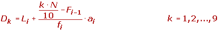
Li is the lower limit of the decile class.
N is the sum of the absolute frequency.
Fi-1 is the absolute frequency immediately below the decile class.
ai is the width of the class containing the decile class.
The deciles are independent of the widths of the classes.
Example
Calculate the deciles of the distribution for the following table:
| fi | Fi | |
|---|---|---|
| [50, 60) | 8 | 8 |
| [60, 70) | 10 | 18 |
| [70, 80) | 16 | 34 |
| [80, 90) | 14 | 48 |
| [90, 100) | 10 | 58 |
| [100, 110) | 5 | 63 |
| [110, 120) | 2 | 65 |
| 65 |
Calculation of the First Decile


Calculation of the Second Decile


Calculation of the Third Decile
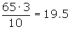

Calculation of the Fourth Decile
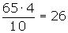
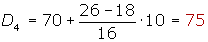
Calculation of the Fifth Decile
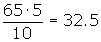

Calculation of the Sixth Decile

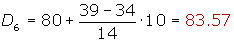
Calculation of the Seventh Decile
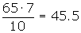
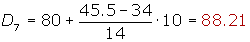
Calculation of the Eighth Decile
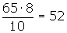
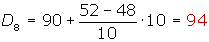
Calculation of the Ninth Decile
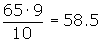